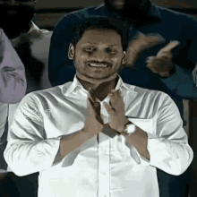
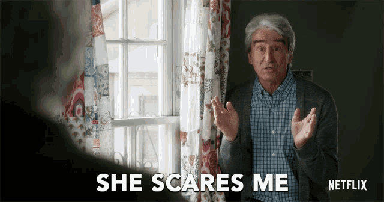
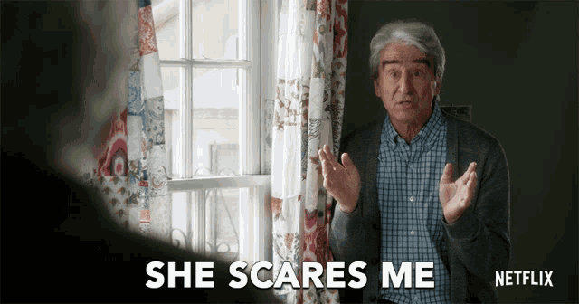

Hey, so it's 12:30 a.m. on 18th June 2025. Let's document my IMTech journey as my 8th sem results are updated. After 3 semesters, I've finally passed all courses.
This is my Sem 1 story:

It was a day after my JEE Advanced exam. I knew I was going to get a non-core branch in an NIT and would take the seat, as I got 99 percentile in both Maths and Physics, and 93 in Chemistry :(
Even in the first round of counselling, I had decent options. For my percentile, I got NIT Warangal ECE in the mock round. But in the second mock, I floated it... why? Because my top choice was UOH 😐
 The next day afternoon, I woke up, started eating egg curry rice and noticed an egg-like lump on the left side of my neck. I wasn't scared, but my mom saw me examining it and panicked. She blamed Maggi noodles ğŸ˜

After two days, we went to Ravindra Babu, a popular doctor. He said it was just an enlarged lymph node. But bro, that was too big to be normal. Still, he gave me antibiotics in tablet form (thank God, no injection).
Back then, injections were a nightmare. Two nurses to hold my arms, compounder for my legs. Me? Crying: "Doctor, please don't inject me!" 😂
After 3 days, it didn't go away. He switched to intravenous antibiotics. I begged for tablets. No luck. The next day, he inserted a cannula into my vein ğŸ˜
The next day afternoon, I woke up, started eating egg curry rice and noticed an egg-like lump on the left side of my neck. I wasn't scared, but my mom saw me examining it and panicked. She blamed Maggi noodles ğŸ˜

After two days, we went to Ravindra Babu, a popular doctor. He said it was just an enlarged lymph node. But bro, that was too big to be normal. Still, he gave me antibiotics in tablet form (thank God, no injection).
Back then, injections were a nightmare. Two nurses to hold my arms, compounder for my legs. Me? Crying: "Doctor, please don't inject me!" 😂
After 3 days, it didn't go away. He switched to intravenous antibiotics. I begged for tablets. No luck. The next day, he inserted a cannula into my vein ğŸ˜
 This is a cannula:
This is a cannula:
Even with IV, the lump didn't reduce. I was referred for surgery. POKIRI LEVEL TWIST loading... It was a lymph node gone rogue due to bacteria. Since tablets and IV failed, they had to cut it out!
The neurosurgeon ordered a biopsy – a needle to extract fluid from the lump. This is what it looks like:
 I didn't do the biopsy that day, but that image is still from my fluid 😏
Surgery day: Woke up at 5 a.m., bathed, brushed, and played Free Fire till 6:15. I was a pro back then, playing 14–16 hours a day.
Hospital, temple visit – all done. Doc asked if I ate anything. I said no. They still gave me coconut water and saline 💸 (Pokiri mini twist!)
Doctor gave anesthesia. But I didn't sleep! They started surgery while I was awake 😨
I didn't do the biopsy that day, but that image is still from my fluid 😏
Surgery day: Woke up at 5 a.m., bathed, brushed, and played Free Fire till 6:15. I was a pro back then, playing 14–16 hours a day.
Hospital, temple visit – all done. Doc asked if I ate anything. I said no. They still gave me coconut water and saline 💸 (Pokiri mini twist!)
Doctor gave anesthesia. But I didn't sleep! They started surgery while I was awake 😨
 I literally removed the mask and told the doctor: "Please let me sleep first, then cut me!" 😅
After a few minutes, anesthesia finally hit. I was awake but couldn't move or feel pain – then blacked out.
I woke up 10 minutes later. Doc said during surgery I was shouting "Shoot! Scope karo! Enemy enemy!" (Free Fire hangover) ğŸ˜
I was moved to ICU. A woman beside me was crying loudly – later I learned she couldn't afford painkillers after surgery. That hit me hard.
I was getting dosed with painkillers and antibiotics every 30 mins via a dual-tube cannula. At night, the cannula choked (blood clotted around it). They had to either flush or change it – I chose flush (super painful 💔)
After 5 days, I healed. Found out my friends also gave exams. We copied 100%. Guess who topped the semester?
1st Sem Topper: MANIKANTA SUNKARA 🏆
But guess what? Just after exams... the egg lump came back! Is it cancer?
This was my Sem 1 story 🙃
I literally removed the mask and told the doctor: "Please let me sleep first, then cut me!" 😅
After a few minutes, anesthesia finally hit. I was awake but couldn't move or feel pain – then blacked out.
I woke up 10 minutes later. Doc said during surgery I was shouting "Shoot! Scope karo! Enemy enemy!" (Free Fire hangover) ğŸ˜
I was moved to ICU. A woman beside me was crying loudly – later I learned she couldn't afford painkillers after surgery. That hit me hard.
I was getting dosed with painkillers and antibiotics every 30 mins via a dual-tube cannula. At night, the cannula choked (blood clotted around it). They had to either flush or change it – I chose flush (super painful 💔)
After 5 days, I healed. Found out my friends also gave exams. We copied 100%. Guess who topped the semester?
1st Sem Topper: MANIKANTA SUNKARA 🏆
But guess what? Just after exams... the egg lump came back! Is it cancer?
This was my Sem 1 story 🙃